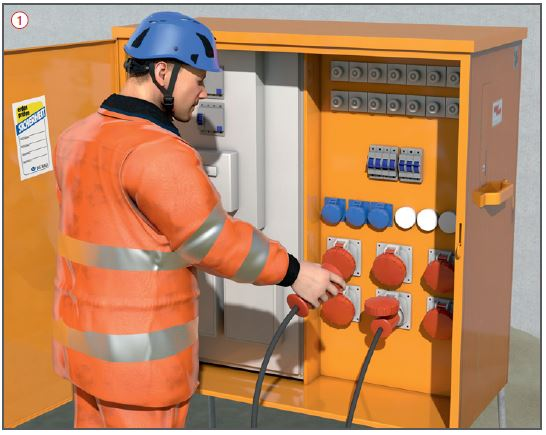
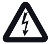
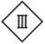
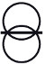
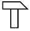
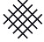
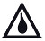
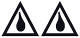

Elektrische Anlagen und Betriebsmittel auf Bau- und Montagestellen
|
|

Gefährdungen
- Beim Umgang mit elektrischen
Anlagen und Betriebsmitteln
besteht die Gefahr einen elektrischen Schlag zu erleiden.
Allgemeines
Errichtung und Instandsetzung
- Elektrische Anlagen und Betriebsmittel
dürfen nur von
Elektrofachkräften oder unter
deren Leitung und Aufsicht errichtet,
verändert und instand
gehalten werden. Das gilt auch
für einfache Tätigkeiten, wie z. B.
die Reparatur einer Steckdose
oder einer Anschlussleitung.
Schutzmaßnahmen
Sichere Anschlusspunkte
- Elektrische Betriebsmittel
müssen von besonderen Anschlusspunkten
aus mit Strom
versorgt werden. Als besondere
Anschlusspunkte gelten z. B.:
- Baustromverteiler,
- der Baustelle zugeordnete Abzweige ortsfester elektrischer Anlagen,
- Transformatoren,
- mobile Stromerzeuger der Bauart A und B.
- Hausinstallationen, z. B. beim Kunden, bieten i. d. R. keine sicheren Anschlusspunkte.
Anschlusspunkte für kleine Baustellen/Hausinstallationen
- Sichere Anschlusspunkte
können auch mit portablen
Fehlerstromschutzeinrichtungen
"PRCD-S" geschaffen werden.
Diese Geräte verfügen über
einen erweiterten Schutzumfang
und eine Schutzleiterüberwachung.
Die PRCD-S überprüft
selbsttätig während des Einschaltvorganges
das vorgelagerte Netz auf Fehler. An einer
fehlerhaften Hausinstallation/Steckdose lässt sich die PRCD-S
nicht einschalten. Das Arbeiten
an einer solchen Steckdose ist
verboten und lebensgefährlich.
Baustromverteiler/-Steckdosen
- Die Anschlussleitung vor der
Messeinrichtung im fest verankerten
Anschlussschrank darf
maximal 30 Meter lang sein und
keine lösbaren Zwischenverbindungen
enthalten.
- Die Anschlussleitung vor dem
Anschlussschrank ist vor mechanischer
Beanspruchung besonders
zu schützen.
- Über die Notwendigkeit der Erdung
eines Baustromverteilers
entscheidet die Elektrofachkraft.
Notwendig wird ein Erdspieß im
TT-Netz, in der Nähe elektrifizierter
Bahnen und ggf. beim Übergang
TN-C auf TN-CS.
- Baustromverteiler entsprechen
dem Schutzgrad IP 44.
- Baustromverteiler mit Steckdosen müssen über eine in AUS
verschließbare Schalteinrichtung
zum Trennen der Einspeisung
verfügen.
- Stromkreise mit Steckdosen
sind über RCD abzusichern.
- Kraftstromsteckdosen (rot)
sind über RCD vom Typ B
abzusichern.
- Steckdosen ≤ 32 A sind über
RCD mit einem Bemessungsfehlerstrom
≤ 30 mA zu betreiben.
- Steckdosen > 32 A dürfen
über RCD mit einem Bemessungsfehlerstrom
≤ 500 mA
betrieben werden.
- Beim Festanschluss von Betriebsmitteln
(oder über Sondersteckvorrichtungen)
ist die Einhaltung
der Abschaltbedingungen
von der Elektrofachkraft
nachzuweisen.
- Nachgeschaltete Stromkreise
dürfen keine Steckdosen enthalten.
- Handgeführte elektrische
Betriebsmittel sind auch bei
Festanschluss über RCD abzusichern.
- IT-Systeme dürfen nur mit Isolationsüberwachung
und RCD
betrieben werden.
- Weitere Schutzmaßnahmen:
- Schutzkleinspannung (SELV),
- Schutztrennung (Trenntrafo).
Elektrische Leitungen
- Als bewegliche Leitungen
sind Gummischlauchleitungen
H07RN-F oder gleichwertige Bauarten
(H07BQ-F) zu verwenden.
- Anschlussleitungen bis 4 m
Länge von handgeführten
Elektrowerkzeugen sind auch in
der Bauart H05RN-F zulässig.
- Leitungen, die mechanisch
besonders beansprucht werden,
sind geschützt zu verlegen, z. B.
unter festen Abdeckungen.
- Leitungsroller sind schutzisoliert
auszuführen. Beührbare
Teile müssen aus Isolierstoff
bestehen. Sie müssen eine
Überhitzungs-Schutzeinrichtung
haben. Die Steckdosen müssen
spritzwassergeschützt ausgeführt
sein.
Leuchten
- Bauleuchten müssen mindestens
sprühwassergeschützt ausgeführt
sein. Sie sollen für rauen
Betrieb geeignet sein.
- Hand-/Bodenleuchten, ausgenommen
solche für Schutzkleinspannung,
müssen schutzisoliert
und strahlwassergeschützt
ausgeführt sein.
Installationsmaterial
- Steckvorrichtungen sind nur
mit Isolierstoffgehäuse und nach
folgenden Bauarten zulässig:
- Steckvorrichtungen, zweipolig
mit Schutzkontakt,
- CEE-Steckvorrichtungen, 5-polig.
- Schalter und Steckvorrichtungen
müssen mindestens spritzwassergeschützt
ausgeführt sein
und eine ausreichende mechanische
Festigkeit besitzen.
Prüfungen
- Elektrische Anlagen und
Betriebsmittel sind zu prüfen
- nach Errichtung, Veränderung
und Instandsetzung,
- regelmäßig entsprechend den
Prüffristen.
Symbole auf elektrischen Betriebsmitteln
 |
Gefährliche elektrische Spannung |
|
Schutzisoliert
(Schutzklasse II) |
 |
Schutzkleinspannung
(Schutzklasse III) |
 |
Trenntransformator
(Schutztrennung) |
|
Explosionsgeschützte,
baumustergeprüfte
Betriebsmittel |
 |
Für rauen Betrieb |
 |
Staubgeschützt |
|
Regengeschützt
(Sprühwassergeschützt) |
 |
Spritzwassergeschützt |
 |
Strahlwassergeschützt |
07/2021